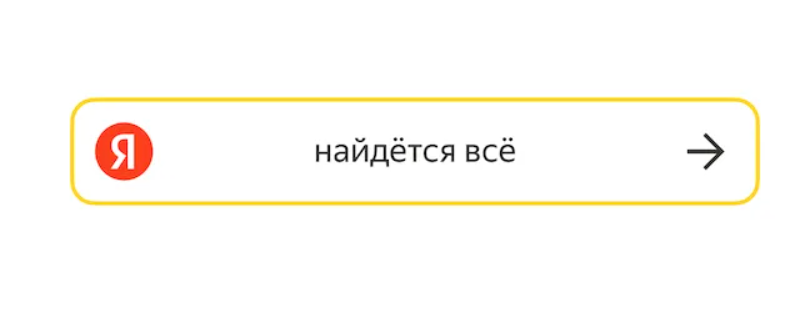

Ответвления компании и их назначения
Яндекс имеет не мало сервисов,
которые постоянно развиваются. На данной странице хочу вам рассказать
и показать историю их создания и развития. Рассмотрим 5 самых полярных
и часто используемых сервисов компании.
Яндекс Такси
Год открытия: 2011. Развитие: активно расширяет географию. Потребность: быстрый и удобный способ заказа такси. Полезен для быстрого передвижения по городу.
Яндекс Плюс
Год открытия: 2018. Развитие: объединяет разные сервисы под одной подпиской. Потребность: доступ к множеству сервисов. Полезен для экономии на подписках.

Яндекс Поиск
Год открытия: 1997. Развитие: постоянные обновления алгоритмов. Потребность: быстрый доступ к информации. Полезен для поиска нужных данных в интернете.
Яндекс Музыка
Год открытия: 2010. Развитие: расширение библиотеки и улучшение интерфейса. Потребность: доступ к музыкальному контенту. Полезен для прослушивания любимых треков.
Яндекс Дзен
Год открытия: 2017. Развитие: внедрение алгоритмов для персонализации контента. Потребность: индивидуальный контент по интересам. Полезен для чтения и просмотра материалов, соответствующих личным предпочтениям.